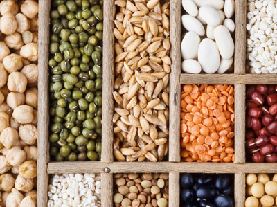

Seed Legislation
& Enforcement

-
The Seeds Act,1966.
-
The Seeds (Amendment) Act, 1972.
-
The Seeds Rule,1968.
-
The Seeds (Amendment) Rule,1973
-
The Seeds (Amendment) Rule,1974.
-
The Seeds Control Order ,1983.
-
The Amendment in Seeds Control Order, 2006.
-
The Seeds Control(Ammendment) Order, 2014.
-
The Essential Commodity Act, 1955.
-
The Essential Commodity Act (Amendment up to 1986).
-
The Essential Commodity Act, 2006.
-
The Seeds bill, 2004.
-
The Protection of Plant Varieties and Farmers Act, 2001
-
The Protection of Plant Varieties and Farmer's Rights Rules, 2003.
-
Seed Inspectors List

Policies
on Seed


Resource
Materials

Seed
certification


Seed
Statistics